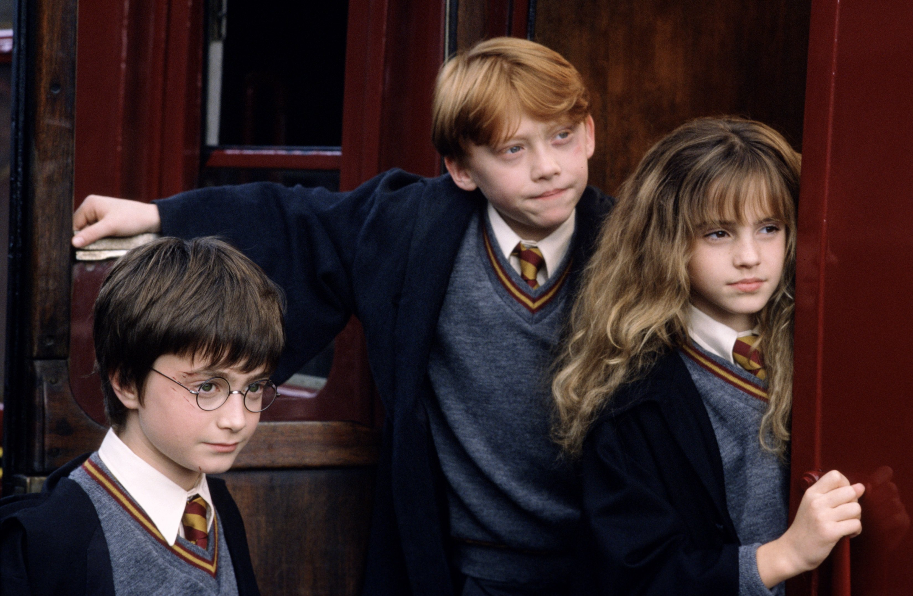

|
Филмите Хари Потър |
|
Филмите Хари Потър |
Магьосниците Албус Дъмбълдор и Минерва Макгонъгол се срещат на улица „Привит Драйв“ номер четири, Литъл Уингинг, графство Съри, подтикнати от последните събития в магическия свят. Лорд Волдемор, вероятно най-силният и страховит тъмен магьосник, живял някога, е бил победен. Лили и Джеймс Потър са станали последните му две жертви. Въпреки всичко техният невръстен син Хари по някакъв начин е оцелял след убийственото проклятие на Волдемор (по-късно става ясно, че е използвал проклятието Авада Кедавра) и белегът с форма на светкавица на челото му е единственият видим ефект от проклятието. Хари незабавно се превръща в легенда сред магьосниците и става известен като „момчето, което оживя“. Хари е оставен да живее заедно с Петуния, сестрата на майка му, нейния съпруг Върнън и все още невръстното им дете Дъдли. Заради презрението си към магьосническия свят, лелята и чичото на Хари решават да скрият от него истината за неговите магически способности и му казват, че родителите му са загинали при автомобилна катастрофа. Семейство Дърсли се отнася с пренебрежение към момчето, което е принудено да спи в килера под стълбището. По-късно момчето тръгва към Хогуортс от перон 9¾ на гара Кингс Крос, Лондон. Там се запознава с Рон Уизли, който произхожда от бедно, но много сплотено семейство, и Хърмаяни Грейнджър – момиче, родено в семейство на мъгъли, което има досадния навик да знае всичко. Веднага след пристигането си в училището всички нови ученици биват разпределени в някой от четирите домове. Всеки дом има характерни черти: Слидерин събира амбициозните и хитри магьосници, които биха направили всичко, за да постигнат това което искат; в Рейвънклоу отиват интелигентните и разумни ученици; Грифиндор е за дръзките и смели магьосници; Хафълпаф се характеризира със справедливост, честност и усърден труд. Разпределянето става последством разпределителна шапка, която всеки от първокурсниците си слага и тя решава в кой дом да отиде. По време на разпределянето на Хари шапката много се колебае дали да не го прати в Слидерин, но впечатленията на момчето от този дом не са добри, затова то през цялото време си мисли за Грифиндор и именно там го праща накрая шапката. В Грифиндор са разпределени също и Рон и Хърмаяни, докато Драко Малфой, който вече не крие презрението си към Хари и неговите приятели, е разпределен в Слидерин. |
 |
|  | Триглаво куче, кръстено от Хагрид Пухчо, охранява отвор в пода на забранения коридор в училището. Тримата герои дълго обсъждат какво може да се пази там и в крайна сметка решават, че там се намира легендарният Философски камък, изработен от Никола Фламел. Смята се, че с този камък човек може да произведе еликсир на живота, който да му донесе безсмъртие, затова Волдемор го иска толкова много. Тримата герои смятат, че кражбата на камъка предстои в скоро време и решават, че е по-добре те да се доберат първи до него.
След като успяват да преминат покрай Пухчо, им се налага да преминат през още няколко препятствия, защитаващи камъка. В крайна
сметка Хари успява да се добере до най-вътрешната стая, където за
своя изненада открива професор Куиръл. Оказва се, че Куиръл през цялото време е използван от Лорд Волдемор, който
със силно намалена сила се нуждае от Философския камък, за да се върне към своето могъщество. Той обаче не успява да вземе
камъка и след като е победен от малкия магьосник и Волдемор напуска неговото тяло, Куиръл умира. |